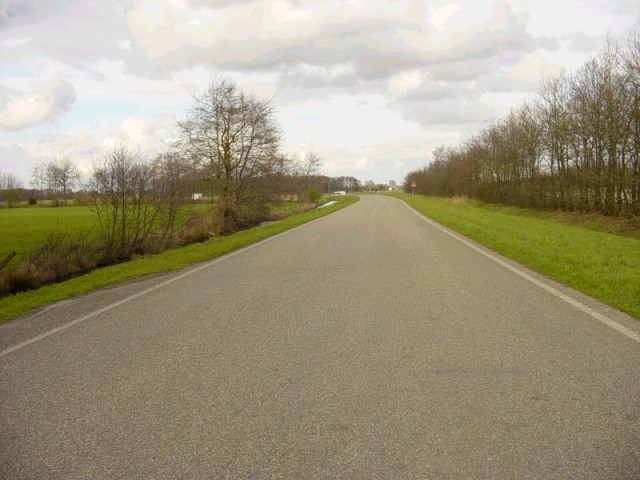
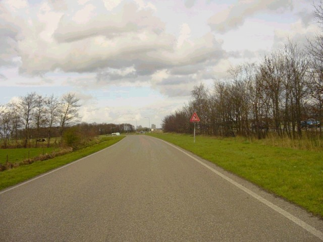
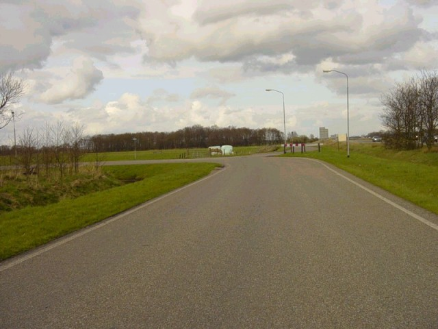
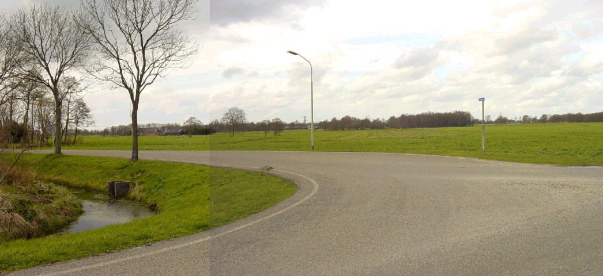
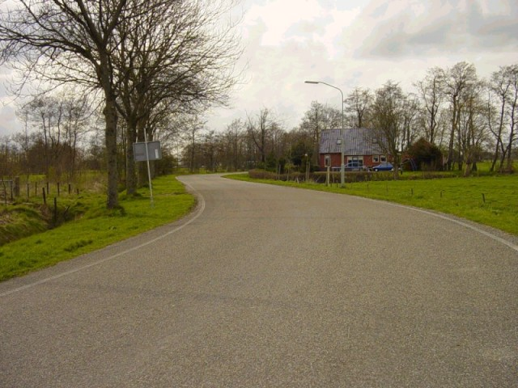
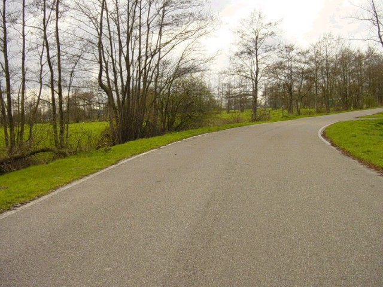

Tolbert - Second corner
|| Contents | Start/Finish Straight | First Corner | Second Corner | Third Corner | Last Corner || Home ||
Click on the hyperlinks above to view photographs of that
section.
The numbers and arrows on the map represent the location and direction of where
each of the photographs were taken.

15

16

17 - The second corner. To the right is the A7 from Groningen to Heerenveen

P1 - A panoramic picture of the second
corner

20 - Coming out of the second corner

21
Photographs & Text ©Roelard Smit. Reproduced here with kind permission.